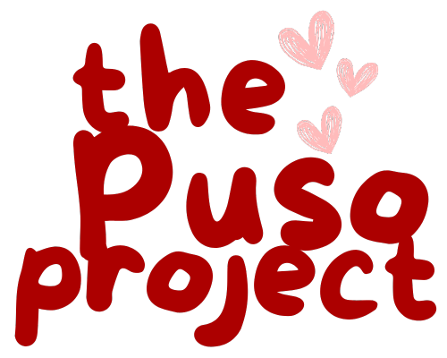

— My Portfolio
Featured Projects

OPERA - Office Portal and Events Appraiser
The online portal for the Office of Culture and Arts - Batangas State University Central.

TPP - The Puso Project
A web platform for The Puso Project, built with Flask and SQLite, featuring a modern HTML/CSS/JS frontend.

MELDET - Melodic Similarity Detection
A tool for analyzing and detecting melodic similarity in songs using Python, music21, and pandas.

SENTINEL - Suicidal Tweet Detection
A machine learning model for analyzing and detecting suicidal tweets using NLP and data visualization libraries.